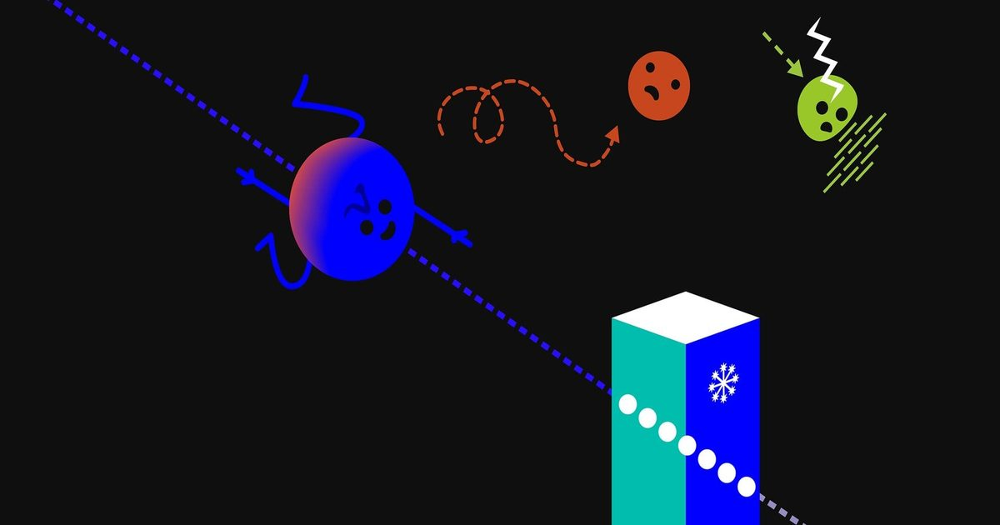

Чтобы получить Нобелевскую премию, отправляйтесь на край света
Нейтрино - это персернистые частицы.
Мы не могли обнаружить нейтрино из глубокого космоса, пока у Фрэнсиса Халзена не появилась блестящая идея, получившая Нобелевскую премию.